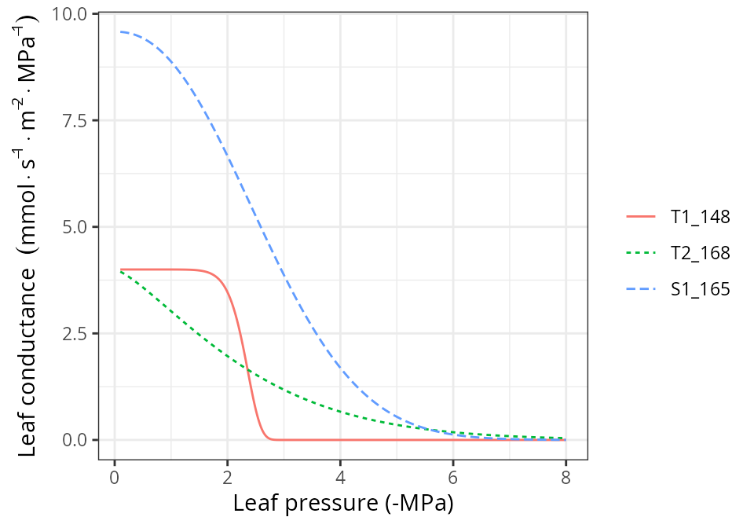
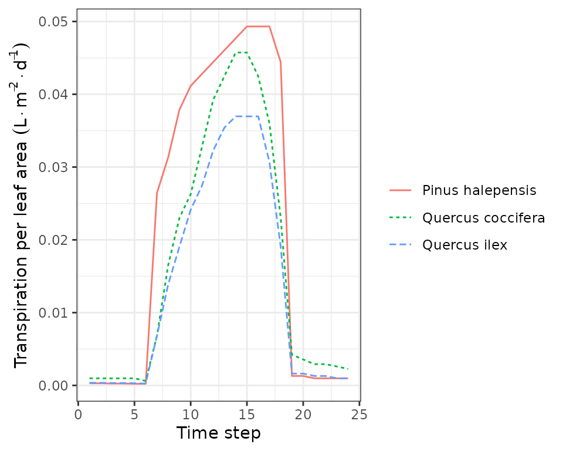

Advanced water and energy balance
Miquel De Caceres
2023-02-27
Source:vignettes/runmodels/AdvancedWaterEnergyBalance.Rmd
AdvancedWaterEnergyBalance.RmdAbout this vignette
This document describes how to run a water and energy balance model that uses a more detailed approach for hydraulics and stomatal regulation described in De Cáceres et al. (2021). We recommend reading vignette Basic water balance before this one for a more accessible introduction to soil water balance modelling. This vignette is meant to teach users to run the simulation model within R. All the details of the model design and formulation can be found at the medfatebook.
Preparing model inputs
Model inputs are explained in greater detail in vignettes Understanding
model inputs and Preparing
model inputs. Here we only review the different steps required
to run function spwb().
Soil, vegetation, meteorology and species data
Soil information needs to be entered as a data frame
with soil layers in rows and physical attributes in columns. Soil
physical attributes can be initialized to default values, for a given
number of layers, using function defaultSoilParams():
spar = defaultSoilParams(4)The soil input for water balance simulation is actually a list of
class soil that is created using a function with the same
name:
examplesoil = soil(spar)As explained in the package overview, models included in
medfate were primarily designed to be ran on forest
inventory plots. Here we use the example object provided with
the package:
data(exampleforestMED)
exampleforestMED## $treeData
## Species N DBH Height Z50 Z95
## 1 Pinus halepensis 168 37.55 800 100 600
## 2 Quercus ilex 384 14.60 660 300 1000
##
## $shrubData
## Species Cover Height Z50 Z95
## 1 Quercus coccifera 3.75 80 200 1000
##
## $herbCover
## [1] 10
##
## $herbHeight
## [1] 20
##
## attr(,"class")
## [1] "forest" "list"Importantly, a data frame with daily weather for the period to be simulated is required. Here we use the default data frame included with the package:
## MinTemperature MaxTemperature Precipitation MinRelativeHumidity
## 2001-01-01 -0.5934215 6.287950 4.869109 65.15411
## 2001-01-02 -2.3662458 4.569737 2.498292 57.43761
## 2001-01-03 -3.8541036 2.661951 0.000000 58.77432
## 2001-01-04 -1.8744860 3.097705 5.796973 66.84256
## 2001-01-05 0.3288287 7.551532 1.884401 62.97656
## 2001-01-06 0.5461322 7.186784 13.359801 74.25754
## MaxRelativeHumidity Radiation WindSpeed
## 2001-01-01 100.00000 12.89251 2.000000
## 2001-01-02 94.71780 13.03079 7.662544
## 2001-01-03 94.66823 16.90722 2.000000
## 2001-01-04 95.80950 11.07275 2.000000
## 2001-01-05 100.00000 13.45205 7.581347
## 2001-01-06 100.00000 12.84841 6.570501Finally, simulations in medfate require a data frame
with species parameter values, which we load using defaults for
Catalonia (NE Spain):
data("SpParamsMED")Simulation control
Apart from data inputs, the behaviour of simulation models is
controlled using a set of global parameters. The default
parameterization is obtained using function
defaultControl():
control = defaultControl("Sperry")To use the complex soil water balance model we must change the values
of transpirationMode (to switch from “Granier” to “Sperry”)
and soilFunctions (to switch from Saxton’s retention curve,
“SX”, to Van Genuchten’s retention curve, “VG”). This is automatically
done when calling function defaultControl() with
"Sperry" as parameter input.
Water balance input object
A last object is needed before calling simulation functions, called
spwbInput. It consists in the compilation of aboveground
and belowground parameters and the specification of additional parameter
values for each plant cohort. This is done by calling function
spwbInput(), but if one has a forest object,
the object can be generated more directly using function
forest2spwbInput():
x = forest2spwbInput(exampleforestMED, examplesoil, SpParamsMED, control)The spwbInput object for advanced water and energy
balance is similar to that of simple water balance simulations, but
contains more elements. Information about the cohort species is found in
element cohorts, i.e. the cohort code, the species index
and species name:
x$cohorts## SP Name
## T1_148 148 Pinus halepensis
## T2_168 168 Quercus ilex
## S1_165 165 Quercus cocciferaElement canopy contains state variables within the
canopy:
x$canopy## zlow zmid zup Tair Cair VPair
## 1 0 50 100 NA NA NA
## 2 100 150 200 NA NA NA
## 3 200 250 300 NA NA NA
## 4 300 350 400 NA NA NA
## 5 400 450 500 NA NA NA
## 6 500 550 600 NA NA NA
## 7 600 650 700 NA NA NA
## 8 700 750 800 NA NA NA
## 9 800 850 900 NA NA NA
## 10 900 950 1000 NA NA NA
## 11 1000 1050 1100 NA NA NA
## 12 1100 1150 1200 NA NA NA
## 13 1200 1250 1300 NA NA NA
## 14 1300 1350 1400 NA NA NA
## 15 1400 1450 1500 NA NA NA
## 16 1500 1550 1600 NA NA NA
## 17 1600 1650 1700 NA NA NA
## 18 1700 1750 1800 NA NA NA
## 19 1800 1850 1900 NA NA NA
## 20 1900 1950 2000 NA NA NA
## 21 2000 2050 2100 NA NA NA
## 22 2100 2150 2200 NA NA NA
## 23 2200 2250 2300 NA NA NA
## 24 2300 2350 2400 NA NA NA
## 25 2400 2450 2500 NA NA NA
## 26 2500 2550 2600 NA NA NA
## 27 2600 2650 2700 NA NA NA
## 28 2700 2750 2800 NA NA NACanopy temperature, water vapour pressure and \(CO_2\) concentration are state variables
needed for canopy energy balance. If the canopy energy balance assumes a
single canopy layer, the same values will be assumed through the canopy.
Variation of within-canopy state variables is modelled if a multi-canopy
energy balance is used (see control parameter
multiLayerBalance).
As you may already known, element above contains the
aboveground structure data that we already know:
x$above## H CR N LAI_live LAI_expanded LAI_dead
## T1_148 800 0.6605196 168.0000 0.76700589 0.76700589 0
## T2_168 660 0.6055642 384.0000 0.66932880 0.66932880 0
## S1_165 80 0.8032817 749.4923 0.03928201 0.03928201 0Belowground parameters can be seen in below:
x$below## Z50 Z95 fineRootBiomass coarseRootSoilVolume
## T1_148 100 600 1457.4125 16.75
## T2_168 300 1000 1508.9327 13.25
## S1_165 200 1000 219.8371 0.25and in belowLayers:
x$belowLayers## $V
## 1 2 3 4
## T1_148 0.8604899 0.1194556 0.01511005 0.004944476
## T2_168 0.5008953 0.4505941 0.04064831 0.007862284
## S1_165 0.6799879 0.2737911 0.03567632 0.010544678
##
## $L
## 1 2 3 4
## T1_148 4815.5858 2286.191 2567.669 4513.443
## T2_168 3364.1867 3221.751 2828.103 4575.847
## S1_165 790.4044 1237.889 2106.565 4091.603
##
## $VGrhizo_kmax
## 1 2 3 4
## T1_148 27535774 1321053 167101.2 54680.68
## T2_168 67483373 22684370 2046368.0 395812.89
## S1_165 404209828 58944700 7680780.7 2270171.56
##
## $VCroot_kmax
## 1 2 3 4
## T1_148 1.1305113 0.3305767 0.03723103 0.006930914
## T2_168 0.8450863 0.7938304 0.08157959 0.009752397
## S1_165 3.6420477 0.9363356 0.07169666 0.010910223
##
## $Wpool
## 1 2 3 4
## T1_148 1 1 1 1
## T2_168 1 1 1 1
## S1_165 1 1 1 1
##
## $RhizoPsi
## 1 2 3 4
## T1_148 -0.033 -0.033 -0.033 -0.033
## T2_168 -0.033 -0.033 -0.033 -0.033
## S1_165 -0.033 -0.033 -0.033 -0.033The spwbInputobject also includes cohort parameter
values for several kinds of traits. For example, plant anatomy
parameters are described in paramsAnatomy:
x$paramsAnatomy## Hmed Al2As SLA LeafWidth LeafDensity WoodDensity FineRootDensity
## T1_148 850 1317.523 5.140523 0.1384772 0.2982842 0.6077016 0.2982842
## T2_168 500 3908.823 6.340000 1.7674359 0.4893392 0.9008264 0.4893392
## S1_165 80 4189.325 4.980084 1.3761085 0.3709679 0.4389106 0.3709679
## conduit2sapwood SRL RLD r635
## T1_148 0.9236406 3172.572 10 1.964226
## T2_168 0.6238125 4398.812 10 1.805872
## S1_165 0.6238125 4398.812 10 2.289452Parameters related to plant transpiration and photosynthesis can be
seen in paramsTranspiration:
x$paramsTranspiration## Gswmin Gswmax Vmax298 Jmax298 Kmax_stemxylem Kmax_rootxylem
## T1_148 0.003086667 0.2850000 72.19617 124.1687 0.15 0.60
## T2_168 0.004473333 0.2007222 68.51600 118.7863 0.40 1.60
## S1_165 0.010455247 0.2830167 62.78100 118.4486 0.29 1.16
## VCleaf_kmax VCleaf_c VCleaf_d VCstem_kmax VCstem_c VCstem_d
## T1_148 4.000000 11.137051 -2.380849 1.339563 12.710000 -5.290000
## T2_168 4.000000 1.339370 -2.582279 1.620936 3.560000 -7.720000
## S1_165 9.579077 1.844224 -3.030130 4.599269 3.537784 -4.126512
## VCroot_kmax VCroot_c VCroot_d VGrhizo_kmax Plant_kmax
## T1_148 1.505250 11.137051 -3.065569 29078608 0.6021000
## T2_168 1.730249 1.339370 -2.214081 92609924 0.6920994
## S1_165 4.660990 1.760307 -2.797092 473105480 1.8643961Finally, parameters related to pressure-volume curves and water
storage capacity of leaf and stem organs are in
paramsWaterStorage:
x$paramsWaterStorage## maxFMC LeafPI0 LeafEPS LeafAF Vleaf StemPI0 StemEPS
## T1_148 126.03063 -1.591429 8.918571 0.3525 0.5258525 -2.008039 13.256355
## T2_168 93.15304 -1.483333 19.260000 0.1700 0.2199087 -3.227438 46.420610
## S1_165 96.53441 -2.370000 17.230000 0.2400 0.4108968 -1.305868 6.297155
## StemAF Vsapwood
## T1_148 0.9236406 7.701237
## T2_168 0.6238125 1.631003
## S1_165 0.6238125 1.631676Finally, remember that one can play with plant-specific parameters for soil water balance (instead of using species-level values) by modifying manually the parameter values in this object.
Static analysis of submodels
Before using the advanced water and energy balance model, is
important to understand the parameters that influence the different
sub-models. Package medfate provides low-level functions
corresponding to sub-models (light extinction, hydraulics,
transpiration, photosynthesis…). In addition, there are several
high-level plotting functions that allow examining several aspects of
these processes.
Vulnerability curves
Given a spwbInput object, we can use function
hydraulics_vulnerabilityCurvePlot() to inspect
vulnerability curves (i.e. how hydraulic conductance of
a given segment changes with the water potential) for each plant cohort
and each of the different segments of the soil-plant hydraulic network:
rhizosphere, roots, stems and leaves:
hydraulics_vulnerabilityCurvePlot(x, type="leaf")
hydraulics_vulnerabilityCurvePlot(x, type="stem")
hydraulics_vulnerabilityCurvePlot(x, type="root")
hydraulics_vulnerabilityCurvePlot(x, examplesoil, type="rhizo")
The maximum values and shape of vulnerability curves for leaves and
stems are regulated by parameters in paramsTranspiration.
Roots have vulnerability curve parameters in the same data frame, but
maximum conductance values need to be specified for each soil layer and
are given in belowLayers$VCroot_kmax. Note that the last
call to hydraulics_vulnerabilityCurvePlot() includes a
soil object. This is because the van Genuchten parameters
that define the shape of the vulnerability curve for the rhizosphere are
stored in this object. Maximum conductance values in the rhizosphere are
given in belowLayers$VGrhizo_kmax.
Supply functions
The vulnerability curves conforming the hydraulic network are used in
the model to build the supply function, which relates
water flow (i.e. transpiration) with the drop of water potential along
the whole hydraulic pathway. The supply function contains not only these
two variables, but also the water potential of intermediate nodes in the
the hydraulic network. Function
hydraulics_supplyFunctionPlot() can be used to inspect any
of this variables:
hydraulics_supplyFunctionPlot(x, type="E")
hydraulics_supplyFunctionPlot(x, type="ERhizo")
hydraulics_supplyFunctionPlot(x, type="dEdP")
hydraulics_supplyFunctionPlot(x, type="StemPsi")
Calls to hydraulics_supplyFunctionPlot() always need
both a spwbInput object and a soil object. The
soil moisture state (i.e. its water potential) is the starting point for
the calculation of the supply function, so different curves will be
obtained for different values of soil moisture.
Stomatal regulation and photosynthesis
The soil water balance model determines stomatal conductance and
transpiration separately for sunlit and shade leaves. Stomatal
conductance is determined after building a photosynthesis function
corresponding to the supply function and finding the value of stomatal
conductance that maximizes carbon revenue while avoiding hydraulic
damage (a profit-maximization approach). Given a meteorological and soil
inputs and a chosen day and timestep, function
transp_stomatalRegulationPlot() allows displaying the
supply and photosynthesis curves for sunlit and shade leaves, along with
an indication of the values corresponding to the chosen stomatal
aperture:
d = 100
transp_stomatalRegulationPlot(x, examplemeteo, day = d, timestep=12,
latitude = 41.82592, elevation = 100, type="E")## Linking to GEOS 3.10.2, GDAL 3.4.1, PROJ 8.2.1; sf_use_s2() is TRUE## Package 'meteoland' [ver. 2.0.0]
transp_stomatalRegulationPlot(x, examplemeteo, day = d, timestep=12,
latitude = 41.82592, elevation = 100, type="An")
transp_stomatalRegulationPlot(x, examplemeteo, day = d, timestep=12,
latitude = 41.82592, elevation = 100, type="Gsw")
transp_stomatalRegulationPlot(x, examplemeteo, day = d, timestep=12,
latitude = 41.82592, elevation = 100, type="T")
transp_stomatalRegulationPlot(x, examplemeteo, day = d, timestep=12,
latitude = 41.82592, elevation = 100, type="VPD")
Pressure volume curves
moisture_pressureVolumeCurvePlot(x, segment="leaf", fraction="symplastic")
moisture_pressureVolumeCurvePlot(x, segment="leaf", fraction="apoplastic")
moisture_pressureVolumeCurvePlot(x, segment="stem", fraction="symplastic")
moisture_pressureVolumeCurvePlot(x, segment="stem", fraction="apoplastic")
Water balance for a single day
Running the model
Soil water balance simulations will normally span periods of several
months or years, but since the model operates at a daily and subdaily
temporal scales, it is possible to perform soil water balance for one
day only. This is done using function spwb_day(). In the
following code we select the same day as before from the meteorological
input data and perform soil water balance for that day only:
sd1<-spwb_day(x, rownames(examplemeteo)[d],
examplemeteo$MinTemperature[d], examplemeteo$MaxTemperature[d],
examplemeteo$MinRelativeHumidity[d], examplemeteo$MaxRelativeHumidity[d],
examplemeteo$Radiation[d], examplemeteo$WindSpeed[d],
latitude = 41.82592, elevation = 100,
slope= 0, aspect = 0, prec = examplemeteo$Precipitation[d])The output of spwb_day() is a list with several
elements:
names(sd1)## [1] "cohorts" "topography" "weather" "WaterBalance"
## [5] "EnergyBalance" "Soil" "Stand" "Plants"
## [9] "RhizoPsi" "SunlitLeaves" "ShadeLeaves" "ExtractionInst"
## [13] "PlantsInst" "SunlitLeavesInst" "ShadeLeavesInst" "LightExtinction"
## [17] "LWRExtinction" "CanopyTurbulence"Water balance output
Element WaterBalance contains the soil water balance
flows of the day (precipitation, infiltration, transpiration, …)
sd1$WaterBalance## PET Rain Snow
## 5.02334675 0.00000000 0.00000000
## NetRain Snowmelt Runon
## 0.00000000 0.00000000 0.00000000
## Infiltration Runoff DeepDrainage
## 0.00000000 0.00000000 0.00000000
## SoilEvaporation PlantExtraction Transpiration
## 0.02832973 0.56120088 0.56120088
## HydraulicRedistribution
## 0.00000000And Soil contains water evaporated from each soil layer,
water transpired from each soil layer and the final soil water
potential:
sd1$Soil## SoilEvaporation HydraulicInput HydraulicOutput PlantExtraction psi
## 1 2.832973e-02 0 0.372560862 0.372560862 -0.03403953
## 2 8.666131e-09 0 0.167995478 0.167995478 -0.03322593
## 3 5.464097e-24 0 0.017912999 0.017912999 -0.03303699
## 4 1.053888e-45 0 0.002731541 0.002731541 -0.03301410Soil and canopy energy balance
Element EnergyBalance contains subdaily variation in
atmosphere, canopy and soil temperatures, as well as canopy and soil
energy balance components.
names(sd1$EnergyBalance)## [1] "Temperature" "CanopyEnergyBalance" "SoilEnergyBalance"
## [4] "TemperatureLayers" "VaporPressureLayers"Package medfate provides a plot function
for objects of class spwb_day that can be used to inspect
the results of the simulation. We use this function to display subdaily
dynamics in plant, soil and canopy variables. For example, we can use it
to display temperature variations (only the temperature of the topmost
soil layer is drawn):
plot(sd1, type = "Temperature")
plot(sd1, type = "CanopyEnergyBalance")
plot(sd1, type = "SoilEnergyBalance")
Plant output
Element Plants contains output values by plant cohort.
Several output variables can be inspected in this element.
sd1$Plants## LAI LAIlive Extraction Transpiration GrossPhotosynthesis
## T1_148 0.76700589 0.76700589 0.35130096 0.35130096 1.81840399
## T2_168 0.66932880 0.66932880 0.18860885 0.18860885 1.33054952
## S1_165 0.03928201 0.03928201 0.02129107 0.02129107 0.07443247
## NetPhotosynthesis RootPsi StemPsi StemPLC LeafPsiMin
## T1_148 1.6975628 -0.6560710 -1.0060886 1.566349e-10 -1.5918066
## T2_168 1.2106008 -0.4594142 -0.6747508 3.830795e-05 -1.1216835
## S1_165 0.0685661 -0.3231324 -0.4688371 1.024998e-04 -0.7639416
## LeafPsiMax dEdP DDS StemRWC LeafRWC LFMC
## T1_148 -0.05149734 0.4056993 0.002379832 0.9975928 0.9534580 122.89543
## T2_168 -0.05448430 0.4406608 0.057317396 0.9978790 0.9654124 91.28072
## S1_165 -0.05291583 1.2419636 0.013719938 0.9900986 0.9823838 95.25329
## WaterBalance
## T1_148 3.539920e-17
## T2_168 2.276825e-18
## S1_165 1.965116e-18While Plants contains one value per cohort and variable
that summarizes the whole simulated day, information by disaggregated by
time step can be accessed in PlantsInst. Moreover, we can
use function plot.spwb_day() to draw plots of sub-daily
variation per species of plant transpiration per ground area (L·m\(^{-2}\)), transpiration per leaf area (also
in L·m\(^{-2}\)), plant net
photosynthesis (in g C·m\(^{-2}\)), and
plant water potential (in MPa):
plot(sd1, type = "PlantTranspiration", bySpecies = T)
plot(sd1, type = "TranspirationPerLeaf", bySpecies = T)
plot(sd1, type = "NetPhotosynthesis", bySpecies = T)
plot(sd1, type = "LeafPsiAverage", bySpecies = T)
Output for sunlit and shade leaves
The model distinguishes between sunlit and shade leaves for stomatal regulation. Static properties of sunlit and shade leaves, for each cohort, can be accessed via:
sd1$SunlitLeaves## LAI Vmax298 Jmax298 LeafPsiMin LeafPsiMax GSWMin
## T1_148 0.39980841 55.49593 95.44628 -1.692364 -0.05149734 0.003118034
## T2_168 0.27273520 51.62497 89.50229 -1.733995 -0.05341111 0.004572911
## S1_165 0.01187649 43.95439 82.92856 -1.418355 -0.05291583 0.010746615
## GSWMax TempMin TempMax
## T1_148 0.21584607 2.884573 13.59505
## T2_168 0.07274192 2.393020 20.30541
## S1_165 0.13550444 2.728241 19.95405
sd1$ShadeLeaves## LAI Vmax298 Jmax298 LeafPsiMin LeafPsiMax GSWMin
## T1_148 0.36719748 47.30808 81.36416 -1.4915181 -0.05149734 0.003091382
## T2_168 0.39659360 47.05393 81.57747 -0.7153459 -0.05448430 0.004588153
## S1_165 0.02740553 43.95439 82.92856 -0.4770211 -0.05291583 0.010746615
## GSWMax TempMin TempMax
## T1_148 0.21777559 2.499004 11.87373
## T2_168 0.05509874 2.240590 11.51640
## S1_165 0.11189268 2.337006 11.50014Instantaneous values are also stored for sunlit and shade leaves. We
can also use the plot function for objects of class
spwb_day to draw instantaneous variations in temperature
for sunlit and shade leaves:
plot(sd1, type = "LeafTemperature", bySpecies=TRUE)
Note that sunlit leaves of some species reach temperatures higher than the canopy. We can also plot variations in instantaneous gross and net photosynthesis rates:
plot(sd1, type = "LeafGrossPhotosynthesis", bySpecies=TRUE)
plot(sd1, type = "LeafNetPhotosynthesis", bySpecies=TRUE)
Or variations in stomatal conductance:
plot(sd1, type = "LeafStomatalConductance", bySpecies=TRUE)
Or variations in vapour pressure deficit:
plot(sd1, type = "LeafVPD", bySpecies=TRUE)
Or variations in leaf water potential:
plot(sd1, type = "LeafPsi", bySpecies=TRUE)
plot(sd1, type = "LeafCi", bySpecies=TRUE)
plot(sd1, type = "LeafIntrinsicWUE", bySpecies=TRUE)
Water balance for multiple days
Running the model
Users will often use function spwb() to run the soil
water balance model for several days. This function requires the
spwbInput object, the soil object and the
meteorological data frame. However, running spwb_day()
modified the input objects. In particular, the soil moisture at the end
of the simulation was:
x$soil$W## [1] 0.9937518 0.9985599 0.9997635 0.9999098And the temperature of soil layers:
x$soil$Temp## [1] 9.847714 6.550440 3.156082 2.564673We can also see the current state of canopy variables:
x$canopy## zlow zmid zup Tair Cair VPair
## 1 0 50 100 6.16445 386 0.5170718
## 2 100 150 200 6.16445 386 0.5170718
## 3 200 250 300 6.16445 386 0.5170718
## 4 300 350 400 6.16445 386 0.5170718
## 5 400 450 500 6.16445 386 0.5170718
## 6 500 550 600 6.16445 386 0.5170718
## 7 600 650 700 6.16445 386 0.5170718
## 8 700 750 800 6.16445 386 0.5170718
## 9 800 850 900 6.16445 386 0.5170718
## 10 900 950 1000 6.16445 386 0.5170718
## 11 1000 1050 1100 6.16445 386 0.5170718
## 12 1100 1150 1200 6.16445 386 0.5170718
## 13 1200 1250 1300 6.16445 386 0.5170718
## 14 1300 1350 1400 6.16445 386 0.5170718
## 15 1400 1450 1500 6.16445 386 0.5170718
## 16 1500 1550 1600 6.16445 386 0.5170718
## 17 1600 1650 1700 6.16445 386 0.5170718
## 18 1700 1750 1800 6.16445 386 0.5170718
## 19 1800 1850 1900 6.16445 386 0.5170718
## 20 1900 1950 2000 6.16445 386 0.5170718
## 21 2000 2050 2100 6.16445 386 0.5170718
## 22 2100 2150 2200 6.16445 386 0.5170718
## 23 2200 2250 2300 6.16445 386 0.5170718
## 24 2300 2350 2400 6.16445 386 0.5170718
## 25 2400 2450 2500 6.16445 386 0.5170718
## 26 2500 2550 2600 6.16445 386 0.5170718
## 27 2600 2650 2700 6.16445 386 0.5170718
## 28 2700 2750 2800 6.16445 386 0.5170718We simply use function resetInputs() to reset state
variables to their default values, so that the new simulation is not
affected by the end state of the previous simulation:
resetInputs(x)
x$soil$W## [1] 1 1 1 1
x$soil$Temp## [1] NA NA NA NA
x$canopy## zlow zmid zup Tair Cair VPair
## 1 0 50 100 NA NA NA
## 2 100 150 200 NA NA NA
## 3 200 250 300 NA NA NA
## 4 300 350 400 NA NA NA
## 5 400 450 500 NA NA NA
## 6 500 550 600 NA NA NA
## 7 600 650 700 NA NA NA
## 8 700 750 800 NA NA NA
## 9 800 850 900 NA NA NA
## 10 900 950 1000 NA NA NA
## 11 1000 1050 1100 NA NA NA
## 12 1100 1150 1200 NA NA NA
## 13 1200 1250 1300 NA NA NA
## 14 1300 1350 1400 NA NA NA
## 15 1400 1450 1500 NA NA NA
## 16 1500 1550 1600 NA NA NA
## 17 1600 1650 1700 NA NA NA
## 18 1700 1750 1800 NA NA NA
## 19 1800 1850 1900 NA NA NA
## 20 1900 1950 2000 NA NA NA
## 21 2000 2050 2100 NA NA NA
## 22 2100 2150 2200 NA NA NA
## 23 2200 2250 2300 NA NA NA
## 24 2300 2350 2400 NA NA NA
## 25 2400 2450 2500 NA NA NA
## 26 2500 2550 2600 NA NA NA
## 27 2600 2650 2700 NA NA NA
## 28 2700 2750 2800 NA NA NANow we are ready to call function spwb():
S = spwb(x, examplemeteo, latitude = 41.82592, elevation = 100)## Initial soil water content (mm): 286.862
## Initial snowpack content (mm): 0
## Performing daily simulations
##
## [Year 2001]:....................................
##
## Final soil water content (mm): 274.404
## Final snowpack content (mm): 0
## Change in soil water content (mm): -12.4576
## Soil water balance result (mm): -12.4576
## Change in snowpack water content (mm): 0
## Snowpack water balance result (mm): 7.10543e-15
## Water balance components:
## Precipitation (mm) 513
## Rain (mm) 462 Snow (mm) 51
## Interception (mm) 98 Net rainfall (mm) 364
## Infiltration (mm) 405 Runoff (mm) 11 Deep drainage (mm) 203
## Soil evaporation (mm) 6 Transpiration (mm) 208
## Plant extraction from soil (mm) 208 Plant water balance (mm) 0 Hydraulic redistribution (mm) 1Function spwb() returns an object of class
spwb. If we inspect its elements, we realize that the output is
arranged differently than in spwb_day():
names(S)## [1] "latitude" "topography" "weather"
## [4] "spwbInput" "spwbOutput" "WaterBalance"
## [7] "EnergyBalance" "Temperature" "TemperatureLayers"
## [10] "Soil" "Stand" "Plants"
## [13] "SunlitLeaves" "ShadeLeaves"In particular, element spwbInput contains a copy of the
input parameters that were used to run the model:
names(S$spwbInput)## [1] "control" "soil" "canopy"
## [4] "cohorts" "above" "below"
## [7] "belowLayers" "paramsPhenology" "paramsAnatomy"
## [10] "paramsInterception" "paramsTranspiration" "paramsWaterStorage"
## [13] "internalPhenology" "internalWater"As before, WaterBalance contains water balance
components, but in this case in form of a data frame with days in
rows:
head(S$WaterBalance)## PET Precipitation Rain Snow NetRain Snowmelt
## 2001-01-01 1.3212770 4.869109 4.869109 0 3.5907493 0
## 2001-01-02 2.2185985 2.498292 2.498292 0 1.2590112 0
## 2001-01-03 1.8045176 0.000000 0.000000 0 0.0000000 0
## 2001-01-04 0.9200627 5.796973 5.796973 0 4.5426429 0
## 2001-01-05 2.2914449 1.884401 1.884401 0 0.6801679 0
## 2001-01-06 1.7255058 13.359801 13.359801 0 11.6284124 0
## Infiltration Runoff DeepDrainage Evapotranspiration Interception
## 2001-01-01 3.5907493 0 2.8483297 1.5205061 1.278360
## 2001-01-02 1.2590112 0 1.3955365 1.5297558 1.239280
## 2001-01-03 0.0000000 0 0.2874671 0.2994305 0.000000
## 2001-01-04 4.5426429 0 3.1959822 1.5070925 1.254330
## 2001-01-05 0.6801679 0 0.9998334 1.4628670 1.204234
## 2001-01-06 11.6284124 0 9.2256998 1.9509958 1.731388
## SoilEvaporation PlantExtraction Transpiration
## 2001-01-01 0.007451492 0.2346951 0.2346951
## 2001-01-02 0.012512038 0.2779634 0.2779634
## 2001-01-03 0.010176782 0.2892537 0.2892537
## 2001-01-04 0.005188798 0.2475737 0.2475737
## 2001-01-05 0.012922863 0.2457106 0.2457106
## 2001-01-06 0.009731186 0.2098764 0.2098764
## HydraulicRedistribution
## 2001-01-01 0.000000e+00
## 2001-01-02 0.000000e+00
## 2001-01-03 0.000000e+00
## 2001-01-04 0.000000e+00
## 2001-01-05 4.643630e-06
## 2001-01-06 2.140316e-05Elements Plants is itself a list with several elements
that contain daily output results by plant cohorts, for example leaf
minimum (midday) water potentials are:
head(S$Plants$LeafPsiMin)## T1_148 T2_168 S1_165
## 2001-01-01 -1.310026 -0.6307738 -0.3797022
## 2001-01-02 -1.375277 -0.6444298 -0.3988882
## 2001-01-03 -1.341651 -0.7098084 -0.4677106
## 2001-01-04 -1.229664 -0.4965636 -0.3122525
## 2001-01-05 -1.401192 -0.6227924 -0.4521180
## 2001-01-06 -1.351689 -0.5726239 -0.3691798Plotting and summarizing results
Package medfate also provides a plot
function for objects of class spwb. It can be used to show
the meteorological input. Additionally, it can also be used to draw soil
and plant variables. In the code below we draw water fluxes, soil water
potentials, plant transpiration and plant (mid-day) water potential:
plot(S, type="Evapotranspiration")
plot(S, type="SoilPsi", bySpecies = TRUE)
plot(S, type="PlantTranspiration", bySpecies = TRUE)
plot(S, type="LeafPsiMin", bySpecies = TRUE)
Alternatively, one can interactively create plots using function
shinyplot, e.g.:
shinyplot(S)While the simulation model uses daily steps, users may be interested
in outputs at larger time scales. The package provides a
summary for objects of class spwb. This
function can be used to summarize the model’s output at different
temporal steps (i.e. weekly, annual, …). For example, to obtain the
average soil moisture and water potentials by months one can use:
summary(S, freq="months",FUN=mean, output="Soil")## W.1 W.2 W.3 W.4 ML.1 ML.2 ML.3
## 2001-01-01 0.9901380 0.9978336 0.9996344 1.0135337 63.52804 116.4003 75.72099
## 2001-02-01 0.9628962 0.9911108 0.9982760 0.9995026 61.78018 115.6160 75.61809
## 2001-03-01 0.9602848 0.9906085 0.9983950 1.0106208 61.61263 115.5574 75.62711
## 2001-04-01 0.8883348 0.9696756 0.9938068 0.9976766 56.99626 113.1155 75.27955
## 2001-05-01 0.9119347 0.9780137 0.9962571 1.0008624 58.51045 114.0882 75.46517
## 2001-06-01 0.6856891 0.9039533 0.9837710 0.9940959 43.99436 105.4488 74.51936
## 2001-07-01 0.8984070 0.9488746 0.9882703 1.0005546 57.64251 110.6890 74.86017
## 2001-08-01 0.9195255 0.9774646 0.9957413 1.0029195 58.99748 114.0242 75.42609
## 2001-09-01 0.9389647 0.9832811 0.9966529 1.0010228 60.24472 114.7027 75.49515
## 2001-10-01 0.9579401 0.9893922 0.9980365 1.0051055 61.46220 115.4155 75.59995
## 2001-11-01 0.9586881 0.9892511 0.9978812 1.0122305 61.51019 115.3991 75.58819
## 2001-12-01 0.9169557 0.9806646 0.9967726 0.9990039 58.83260 114.3974 75.50421
## ML.4 MLTot WTD SWE PlantExt.1 PlantExt.2
## 2001-01-01 30.70954 286.3588 3931.932 1.93885974 0.1773633 0.07268019
## 2001-02-01 30.28440 283.2987 3999.617 0.36152132 0.2388547 0.10611838
## 2001-03-01 30.62128 283.4184 3944.924 0.01762496 0.2936731 0.13247536
## 2001-04-01 30.22907 275.6204 4000.000 0.60940966 0.3233746 0.15607099
## 2001-05-01 30.32560 278.3894 3989.534 0.00000000 0.4378221 0.21551293
## 2001-06-01 30.12058 254.0831 4000.000 0.00000000 0.4791420 0.38452535
## 2001-07-01 30.31628 273.5080 3972.917 0.00000000 0.5689897 0.29399776
## 2001-08-01 30.38793 278.8357 3979.455 0.00000000 0.6219662 0.30087301
## 2001-09-01 30.33046 280.7730 3989.341 0.00000000 0.4102844 0.19453485
## 2001-10-01 30.45417 282.9319 3972.608 0.00000000 0.3657215 0.16881969
## 2001-11-01 30.67005 283.1675 3935.360 3.59916935 0.2182847 0.09691917
## 2001-12-01 30.26929 279.0035 4000.000 0.00000000 0.1963657 0.09277109
## PlantExt.3 PlantExt.4 HydraulicInput.1 HydraulicInput.2
## 2001-01-01 0.00785354 0.001276031 1.129318e-06 3.572063e-07
## 2001-02-01 0.01145071 0.001780932 3.869909e-06 0.000000e+00
## 2001-03-01 0.01426533 0.002220339 7.487064e-05 0.000000e+00
## 2001-04-01 0.01701048 0.002623331 6.430282e-04 0.000000e+00
## 2001-05-01 0.02326268 0.003534965 4.289082e-04 0.000000e+00
## 2001-06-01 0.04267343 0.006412120 2.428635e-02 0.000000e+00
## 2001-07-01 0.03206426 0.004836314 4.980558e-03 1.161382e-06
## 2001-08-01 0.03228674 0.004876908 9.022015e-05 0.000000e+00
## 2001-09-01 0.02090342 0.003177715 1.120113e-04 0.000000e+00
## 2001-10-01 0.01813611 0.002782033 1.046798e-05 0.000000e+00
## 2001-11-01 0.01049874 0.001659798 3.276066e-05 0.000000e+00
## 2001-12-01 0.01013427 0.001579173 6.707734e-05 0.000000e+00
## HydraulicInput.3 HydraulicInput.4 psi.1 psi.2
## 2001-01-01 3.746851e-08 0 -0.03486022 -0.03337604
## 2001-02-01 0.000000e+00 0 -0.04024732 -0.03449273
## 2001-03-01 0.000000e+00 0 -0.04074067 -0.03452210
## 2001-04-01 0.000000e+00 0 -0.05995999 -0.03819448
## 2001-05-01 0.000000e+00 0 -0.05647596 -0.03688339
## 2001-06-01 0.000000e+00 0 -0.22764511 -0.05344010
## 2001-07-01 0.000000e+00 0 -0.07351123 -0.04273100
## 2001-08-01 0.000000e+00 0 -0.05144479 -0.03676545
## 2001-09-01 0.000000e+00 0 -0.04566248 -0.03568769
## 2001-10-01 0.000000e+00 0 -0.04137717 -0.03478375
## 2001-11-01 0.000000e+00 0 -0.04122487 -0.03470476
## 2001-12-01 0.000000e+00 0 -0.05174456 -0.03632025
## psi.3 psi.4
## 2001-01-01 -0.03306308 -0.03107964
## 2001-02-01 -0.03328422 -0.03308441
## 2001-03-01 -0.03325252 -0.03160817
## 2001-04-01 -0.03400736 -0.03337872
## 2001-05-01 -0.03359923 -0.03288512
## 2001-06-01 -0.03573636 -0.03397117
## 2001-07-01 -0.03481999 -0.03296422
## 2001-08-01 -0.03367503 -0.03261311
## 2001-09-01 -0.03351427 -0.03283347
## 2001-10-01 -0.03332014 -0.03238552
## 2001-11-01 -0.03332582 -0.03143672
## 2001-12-01 -0.03353014 -0.03316436Parameter output is used to indicate the element of the
spwb object for which we desire summaries. Similarly, it is
possible to calculate the average stress of plant cohorts by months:
summary(S, freq="months",FUN=mean, output="PlantStress")## T1_148 T2_168 S1_165
## 2001-01-01 0.0002892121 0.01969207 0.003525673
## 2001-02-01 0.0008320456 0.03334712 0.006759623
## 2001-03-01 0.0011766848 0.04037507 0.008490797
## 2001-04-01 0.0016742484 0.04921521 0.011275367
## 2001-05-01 0.0036000270 0.06738954 0.017498551
## 2001-06-01 0.0118312362 0.10913221 0.037835507
## 2001-07-01 0.0066461940 0.08976885 0.025856441
## 2001-08-01 0.0061660483 0.08695109 0.025321634
## 2001-09-01 0.0029401027 0.06051037 0.015326820
## 2001-10-01 0.0019325072 0.04871078 0.011658150
## 2001-11-01 0.0006108954 0.02862724 0.005682381
## 2001-12-01 0.0006337775 0.02863475 0.005707937The summary function can be also used to aggregate the
output by species. In this case, the values of plant cohorts belonging
to the same species will be averaged using LAI values as weights. For
example, we may average the daily drought stress across cohorts of the
same species (here there is only one cohort by species, so this does not
modify the output):
## Pinus halepensis Quercus coccifera Quercus ilex
## 2001-01-01 0.0001418828 0.003068415 0.02037284
## 2001-01-02 0.0003355286 0.003721900 0.01977608
## 2001-01-03 0.0003288582 0.004402167 0.02408092
## 2001-01-04 0.0001180733 0.002898879 0.01747285
## 2001-01-05 0.0003764883 0.003508328 0.01954920
## 2001-01-06 0.0002327631 0.002617736 0.01613133Or we can combine the aggregation by species with a temporal aggregation (here monthly averages):
summary(S, freq="month", FUN = mean, output="PlantStress", bySpecies = TRUE)## Pinus halepensis Quercus coccifera Quercus ilex
## 2001-01-01 0.0002892121 0.003525673 0.01969207
## 2001-02-01 0.0008320456 0.006759623 0.03334712
## 2001-03-01 0.0011766848 0.008490797 0.04037507
## 2001-04-01 0.0016742484 0.011275367 0.04921521
## 2001-05-01 0.0036000270 0.017498551 0.06738954
## 2001-06-01 0.0118312362 0.037835507 0.10913221
## 2001-07-01 0.0066461940 0.025856441 0.08976885
## 2001-08-01 0.0061660483 0.025321634 0.08695109
## 2001-09-01 0.0029401027 0.015326820 0.06051037
## 2001-10-01 0.0019325072 0.011658150 0.04871078
## 2001-11-01 0.0006108954 0.005682381 0.02862724
## 2001-12-01 0.0006337775 0.005707937 0.02863475